1740QCA Motion Design · Assignment 03 · Trimester 2 2026
A Process Journal documenting the design of a new and original multi-layered soundtrack for the 3D kinetic text sequence from Assignment 02. The old music track was removed entirely, and a soundtrack of ambient sound, sound effects and tonal layers was built from ten sound sources in the Premiere Pro Timeline, then edited, layered and synchronised to the motion frame by frame.
The visuals are a twelve-line poem that moves from concealment to disclosure: walls built up, something breaking, the walls coming down, and growth afterwards. In Assignment 02 a cinematic instrumental carried the mood. Here the sound is designed to be the poem's physical world instead: a quiet room, a breath, a heartbeat, pressure building, a snap, falling stone, and finally warmth. Every sound sits on a specific visual event, and the soundtrack follows the same emotional arc as the text.
Week 10 · Assignment 03 Task 01
Creating and editing a multi-track soundtrack in the Premiere Pro Timeline using audio layers, sound effects, ambient sound and audio levels. This stage covers the genre and exemplars that shaped the approach, sourcing and licensing the sounds, preparing the project, and building the first half of the soundtrack up to the break.
The piece sits within the genre of the main title sequence and kinetic typography: type is the only visual element, so the sound has to do the work that actors, sets and dialogue do in a film. Three title sequences were used as exemplars, each for a different soundtrack decision.
Bass's titles use only bars and type sliding on and off screen, cut against Bernard Herrmann's jagged, all-strings score. The type and the music feel like one gesture: every slicing movement lands on a stab in the score.
Influence: hard sync. The two biggest events in my piece, the break and the walls landing, each get one sound placed on the exact frame, rather than a sound that roughly covers the moment.
Hand-etched, jittering type assembled by hand rather than digitally, cut to an abrasive industrial soundtrack. The unease comes from texture and noise rather than melody, and the sequence is often credited with reviving the title sequence as an art form.
Influence: texture over melody. The dark first half of my soundtrack is built from noise-based layers (room tone, breath, heartbeat, rumble, crunch) instead of music, so the tension feels physical.
Glowing serif letterforms drift slowly into place over a swelling synthesiser theme by Kyle Dixon and Michael Stein. It won the 2017 Emmy for Outstanding Main Title Design. The motion is slow and the music resolves by building warmth rather than hitting.
Influence: resolution through warmth. My final couplet is glowing serif type too, so the ending uses a slow tonal swell and chimes that rise with the glow, the first musical sounds in the piece.
All ten sounds were sourced from Freesound under Creative Commons licences (CC0, CC BY and CC BY-NC), and every one is credited with its licence in the Credits & Licences section. Each sound was chosen for one specific line of the poem, and none is used as it was downloaded: every source has been trimmed, reversed, keyframed, re-levelled or layered with others to remix it into a new composition. The two files Premiere could not open (.ogg and .flac) were first converted to .wav in Adobe Audition.
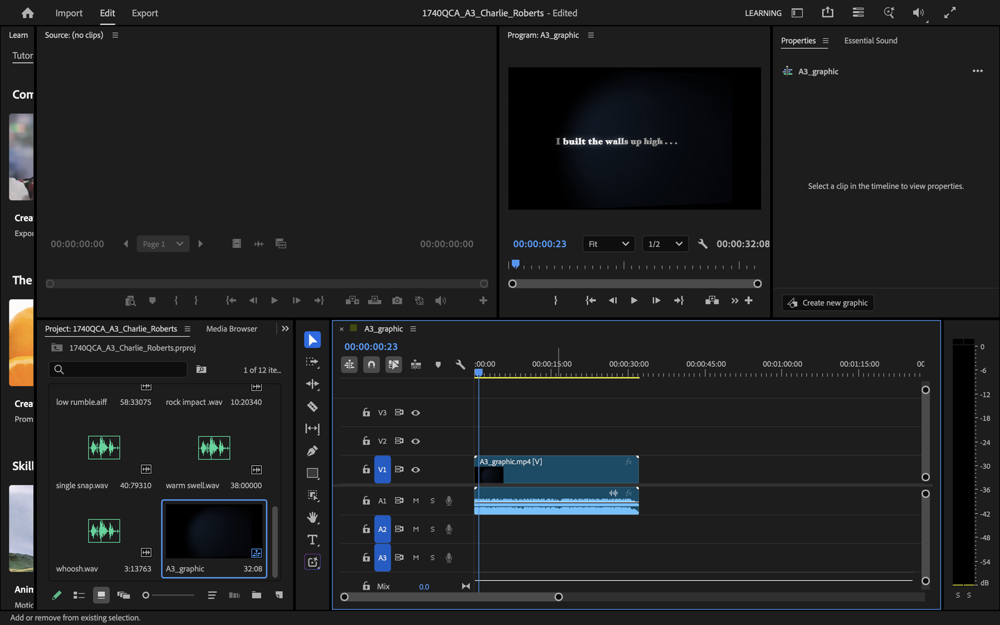
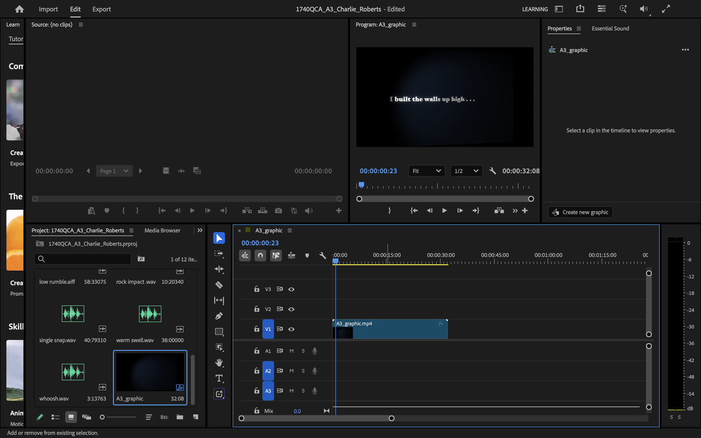
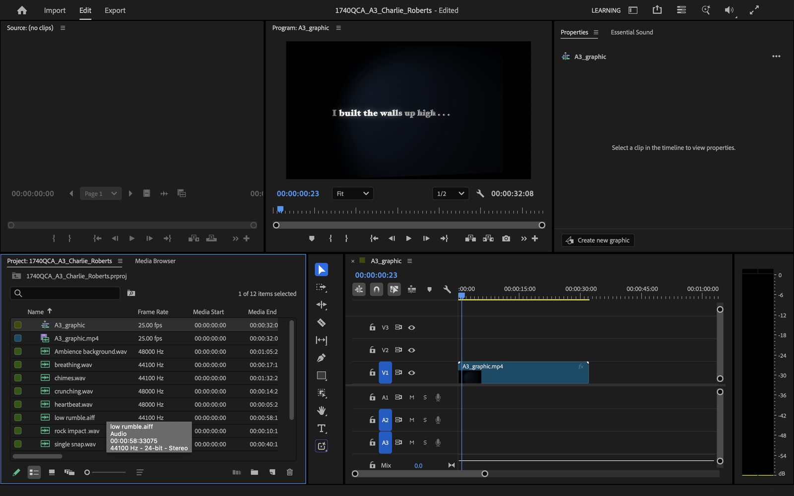
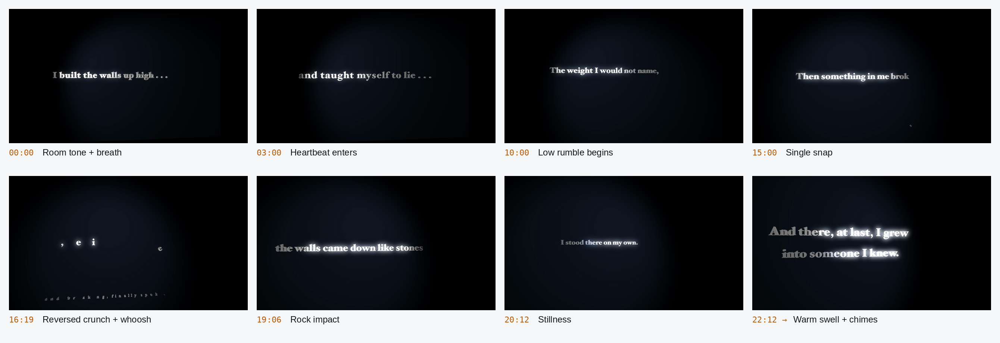
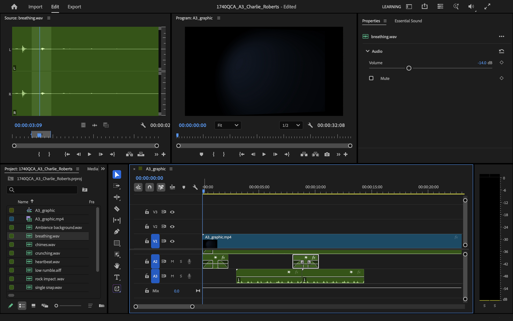
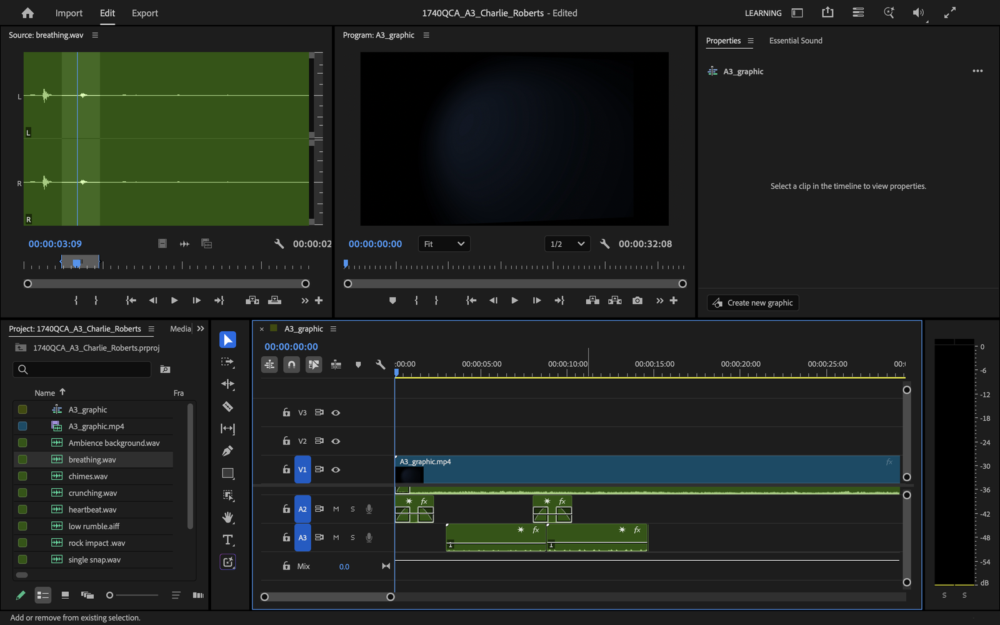
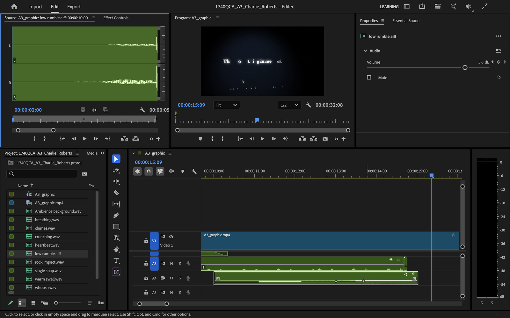
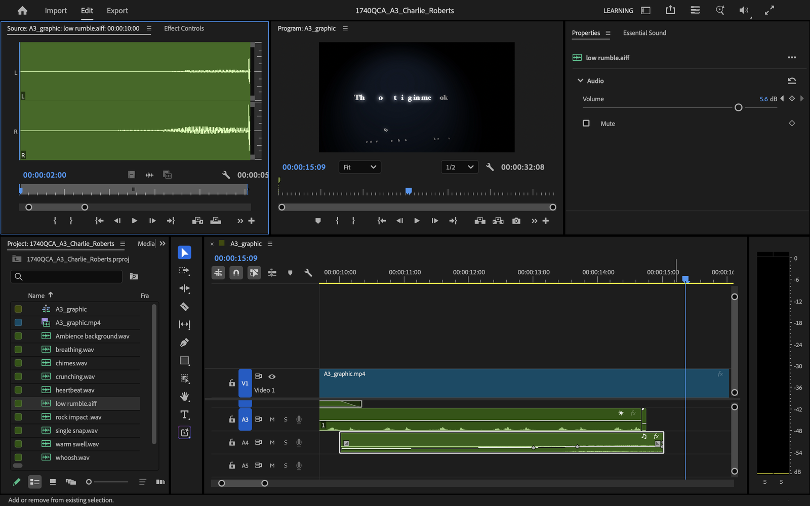
Week 11 · Assignment 03 Task 02
Editing audio and adding effects in Adobe Premiere Pro: building the break, the walls falling and the resolution, synchronising each sound effect to its visual event, and exporting the first full version.
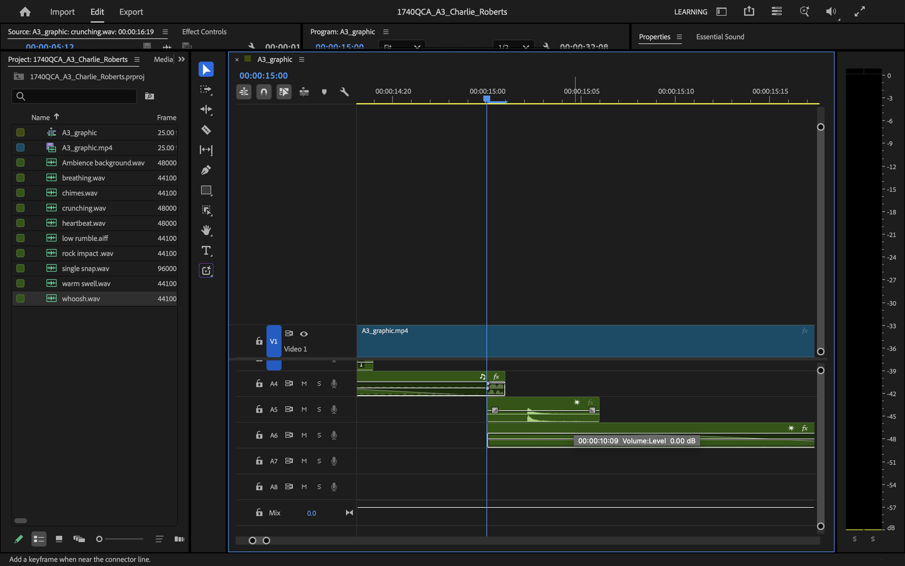
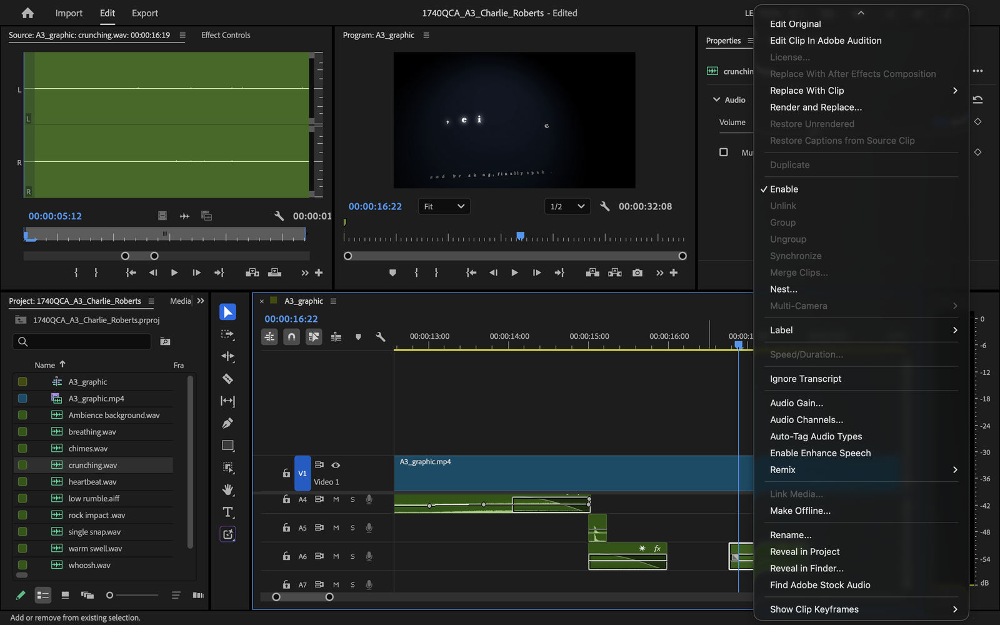
"the walls came down like stones" drops in from the top of frame at 18:22 and lands at 19:06. The first whoosh (16:19) was trimmed to end at 17:12 with the letters reassembling. The second was first cut from the loudest part of the sound to peak as the words fell, but it felt too animated, like a cartoon effect. It was replaced with the build-up section, raised to +10 dB and faded out over the rock impact, so the fall and the crash read as one continuous movement. The rock impact hits on the landing frame and its cracking tail fades out under "I stood there on my own.", which is left otherwise silent.
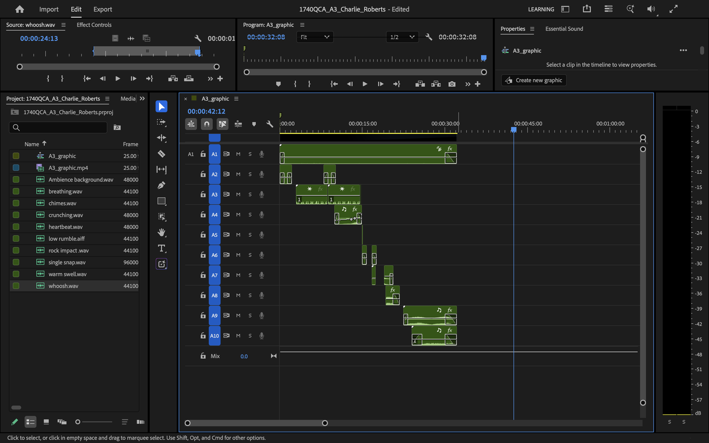
| Track | Sound | Placement | Edit / technique |
|---|---|---|---|
| A1 | Room tone | 00:00 – 32:08 | Ambient bed, fades in and out, -10 dB |
| A2 | Breathing | 00:00 · 08:00 | One breath isolated with In/Out, fades, -10 / -14 dB |
| A3 | Heartbeat | 03:00 – 14:19 | Duplicated end to end, hard stop at the break, 0 dB |
| A4 | Low rumble | 10:00 – 15:00 | Volume keyframe ramp, hard cut at 15:00 |
| A5 | Single snap | 15:00 | One snap cut from many, In point on the transient |
| A6 | Crunching | 15:00 · 16:19 | Forward for the scatter, Reverse Speed (Cmd + R) for the return |
| A7 | Whoosh | 16:19 · ~19:00 | Trimmed; build-up section faded over the impact, +10 dB |
| A8 | Rock impact | 19:06 | Hit on the landing frame, long tail fade, -15 dB |
| A9 | Warm swell | 22:12 – 32:08 | Long fade in, faded out from 30:00 |
| A10 | Chimes | 24:00 – 32:08 | Long fade in with the glow, faded out from 30:00 |
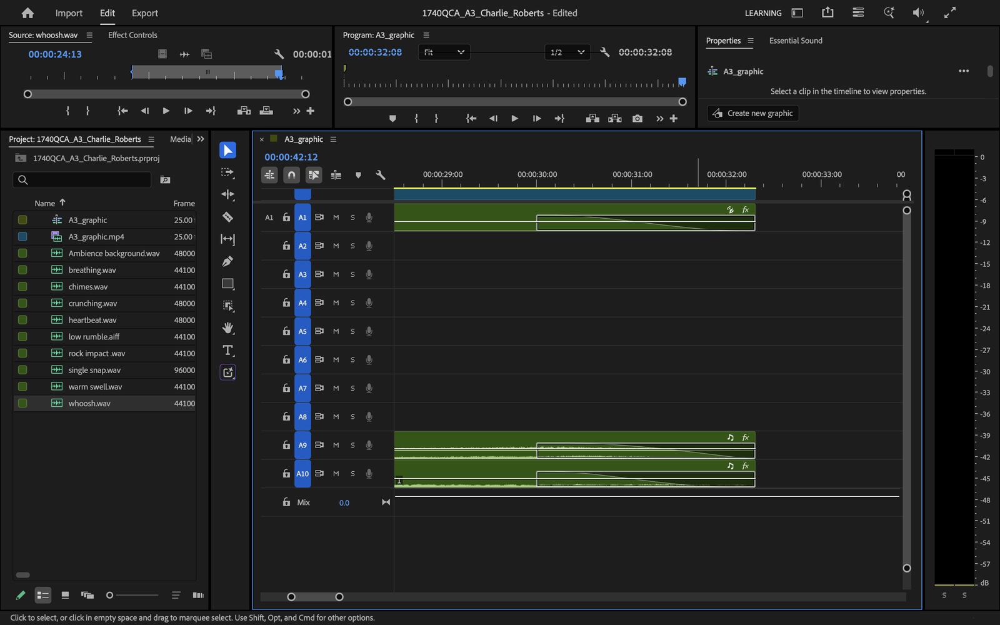
Week 12 · Assignment 03 Task 03
Resolving a finished soundtrack and motion design sequence that brings together video editing techniques and a multi-layered synchronised soundtrack. Most of the problems were about audio levels: ten sources recorded at very different loudnesses had to be balanced so each one is heard at the right moment.
| Problem | Decision |
|---|---|
| The heartbeat was inaudible at -20 dB. It is a low-frequency sound, and laptop speakers barely reproduce it. | Raised to 0 dB and checked on both headphones and laptop speakers. |
| The low rumble masked the heartbeat halfway through the ramp, because both sounds sit in the low frequencies. | Lowered the keyframe ramp so the rumble stays under the heartbeat, surging only after the heartbeat stops. |
| The rock impact file was far louder than the other sources and overwhelmed the mix. | Lowered to -15 dB. Balanced by ear rather than by matching numbers. |
| The whoosh peak timed to the falling words felt too animated, like a cartoon effect. | Swapped to the build-up section, raised to +10 dB and faded over the impact so fall and crash become one movement. |
| Measuring v1 showed it was quiet overall (-24.6 LUFS) and the snap peaked at 0.0 dB, the limit before clipping, about 14 dB louder than the rock impact. | Snap lowered by 8 dB, then the whole mix raised by 6 dB on the Mix track, giving v2. |
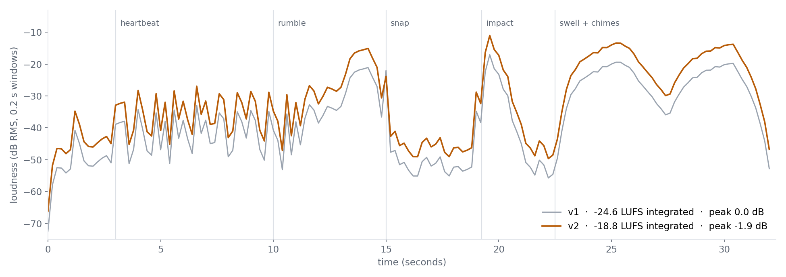
Week 12 · Assignment 03
The strongest part of my soundtrack is the ending. The warm swell and the chimes rise together as the final couplet glows, and they bring the whole piece to a calm, hopeful close. This connects to Stranger Things, where glowing serif type is resolved by a slow, building synth rather than a hit. Compared to the Empire Seasons music I used in Assignment 02, the new soundtrack feels much more tuned in to the words. Because every sound effect is synchronised to a specific visual event, the audio and the type now work as one connected piece rather than music simply playing behind the text.
The hardest part was managing the audio levels. Every sound I sourced had been recorded at a completely different volume, so I had to listen back over and over to work out what needed changing. The heartbeat was almost inaudible at first, while the rock impact was far too loud. I learnt that mixing is done by ear, not by matching numbers.
The snap surprised me the most. I expected it to be simple, but I had to redo it many times because it was too loud and didn't line up with the letters scattering. Like the hard sync in Psycho, it only worked once it hit on the exact frame.
Through self-directed learning, I taught myself how to change audio properties such as volume and keyframes, how to align sounds to the timeline, and how to use In and Out points to crop out exactly the part of a sound I needed.
Feedback also shaped the final outcome. My partner watched v1 and said it was too quiet, so for v2 I raised the overall volume and adjusted several sound effects so they sat more evenly in the mix. If I had more time, I would experiment with more and better sound effects to make the soundtrack flow more smoothly.
Assignment 03
Sound effects and ambient sound — all from Freesound (freesound.org)
All sounds are used non-commercially, as one part of a new composition, and every one has been edited (trimmed, reversed, keyframed, re-levelled and layered). No raw files are redistributed.
Visuals
Original 3D kinetic text sequence and poem from Assignment 02 (Charlie Roberts, 2026).
Exemplars
Software
Adobe Premiere Pro (editing, multi-track mix, export) · Adobe Audition (converting .ogg and .flac files to .wav).
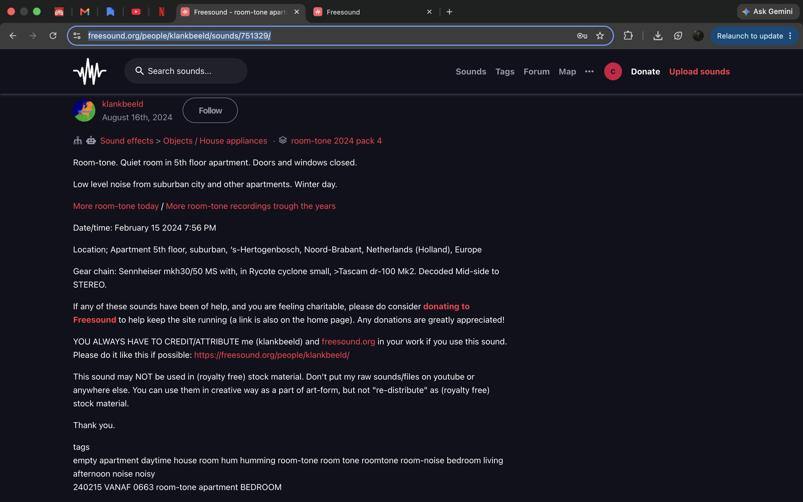
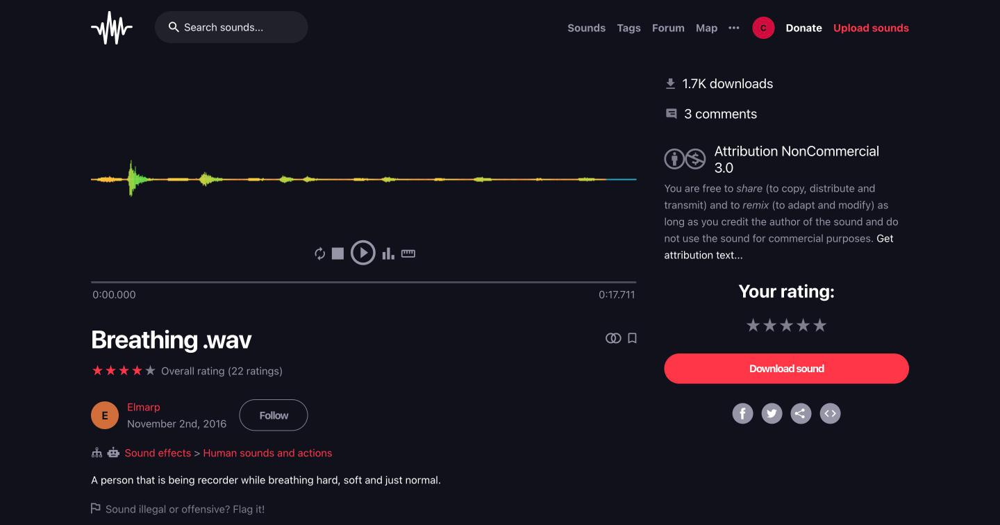
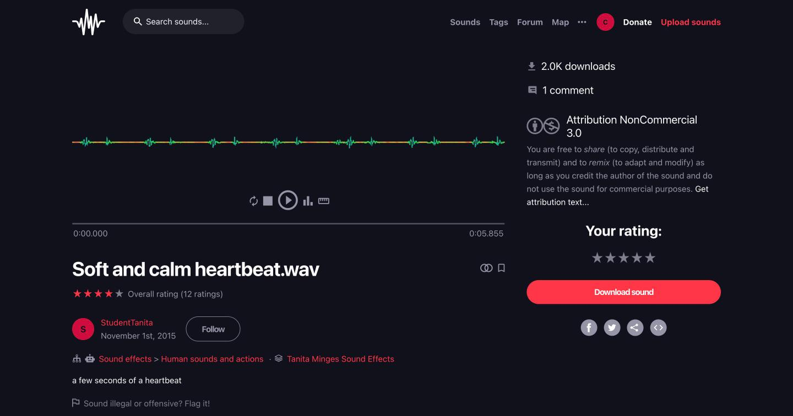
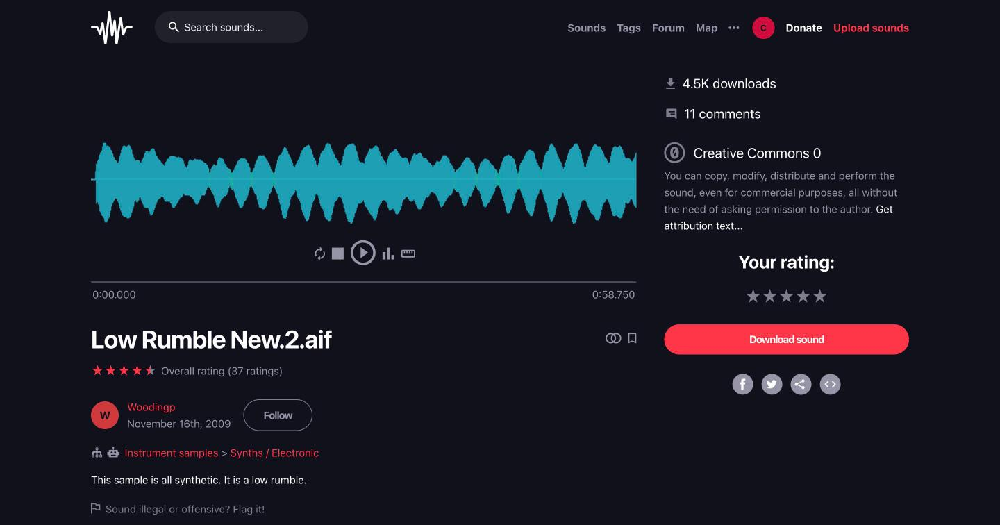
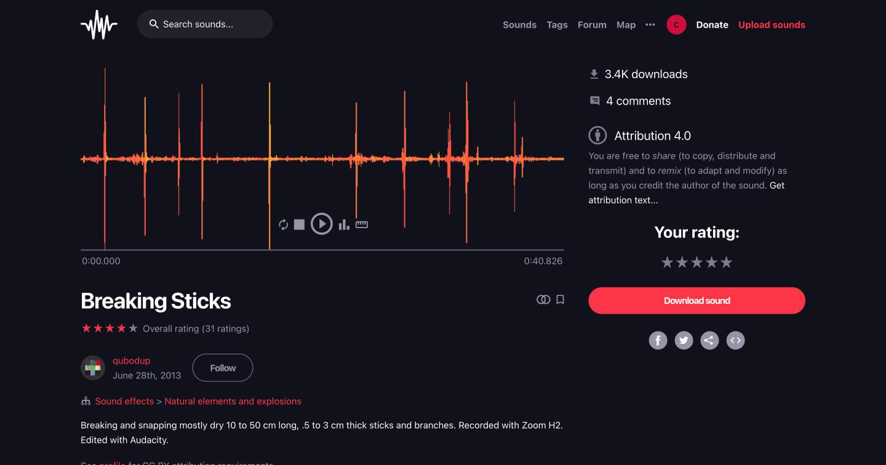
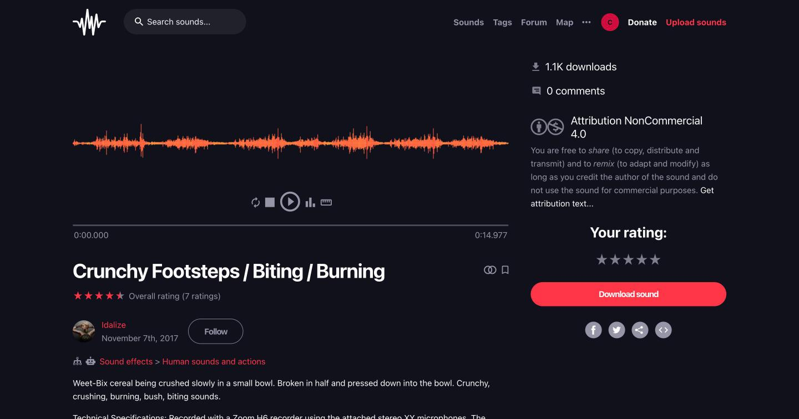
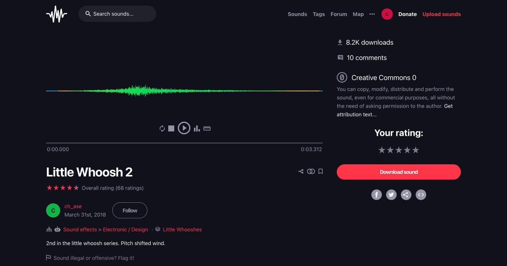
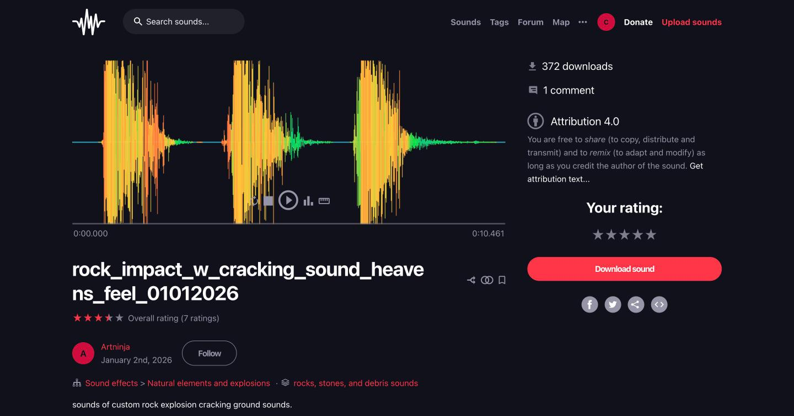
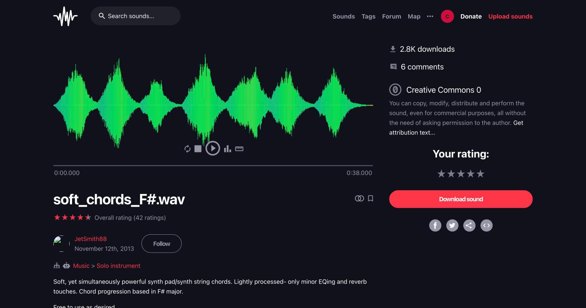
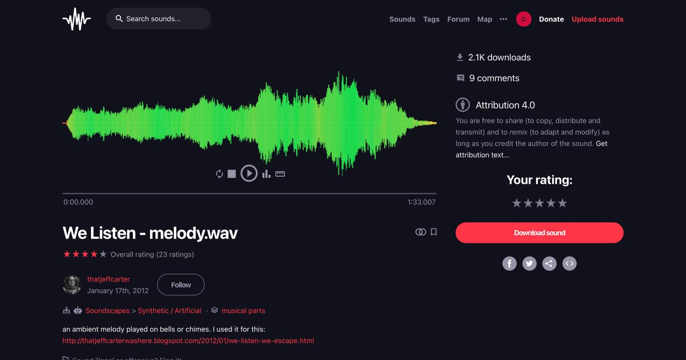